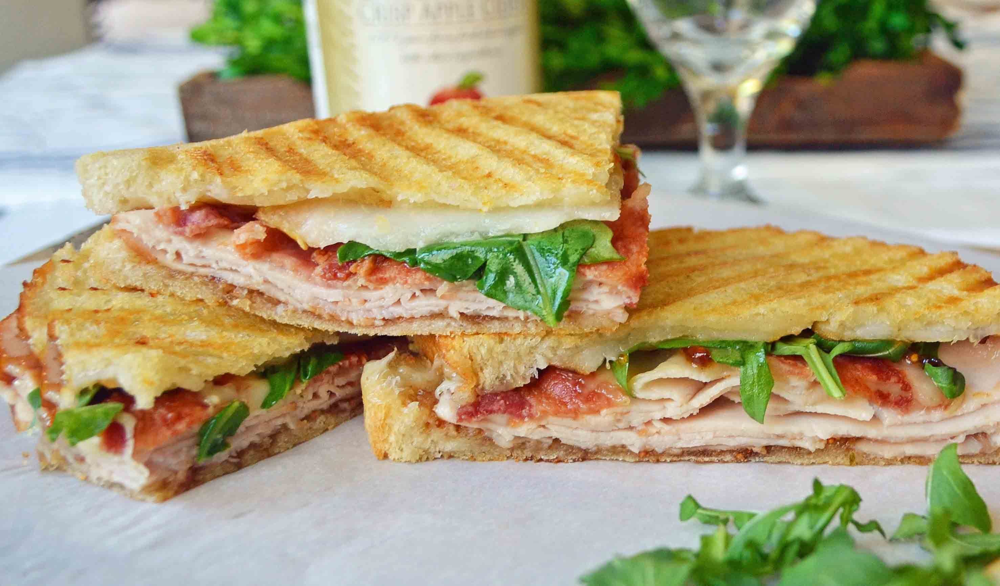

Turkey and Bacon Panini with Chipotle Mayonnaise

This turkey and bacon panini is one of my favorite sandwiches to make. I came up with the recipe when I was trying to use up leftovers one day, and my family raved! It's also excellent as a vegetarian sandwich if you leave out the turkey and bacon.
Ingredients
- 8 slices of bacon
- 1 tblespoon of butter
- 2 cloves of garlic(minced)
- 3 cups of fresh spinach leaves
- 1/2 cup of reduced-fat mayonnaise
- 2 chipotle peppers in adobo sauce(minced)
- 1 tablespoon if adobi sauce from chipotle peppers
- 8 (4 inch) pieces of focaccia bread
- 4 slices of provolone cheese
- 1/2 pound slice deli turkey meat
Direction
- Cook bacon in a large, deep skillet over medium-high heat until evenly browned, about 10 minutes. Drain on a paper towel-lined plate.
- While the bacon is cooking, melt butter in a large skillet over medium heat. Add onion and cook, stirring occasionally, until soft and translucent, 7 to 10 minutes, adding garlic for the last minute. Stir in spinach and cook until wilted, about 3 minutes. Remove from the heat.
- Preheat a panini press according to the manufacturer's instructions.
- Stir mayonnaise, chipotle peppers, and adobo sauce together in a small bowl. Spread mixture over 4 slices of focaccia bread, then top each slice with provolone, turkey, two slices bacon, spinach mixture, and remaining bread slices.
- Cook sandwiches in the preheated panini press until crispy and golden brown, about 5 minutes each.
original recipe